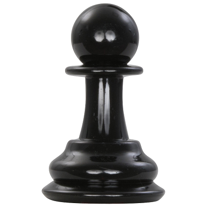

Пешка
Пешка — шахматная фигура, которая в начале игры расположена у каждого игрока по 8 пешек.Обычно пешка перемещается на одну клетку вперёд по вертикали.
Исключение — первый ход: если пешка ещё не совершала ходов, игрок может передвинуть её сразу на две клетки вперёд. Однако после первого хода пешка вновь возвращается к обычному правилу.
Пешка не может ходить, если перед ней стоит своя или вражеская фигура.
